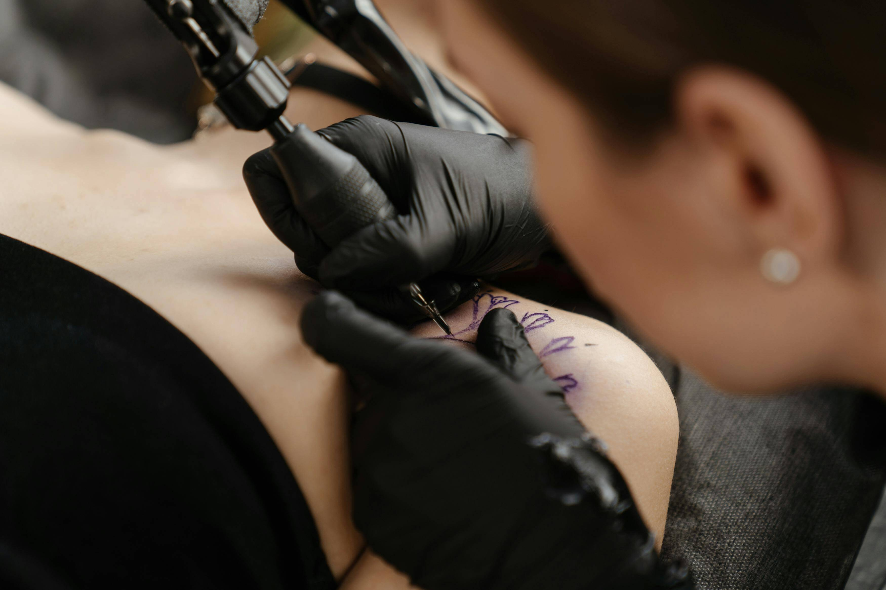

As the sole proprietor of my studio, I pour my heart and soul into crafting tattoos that not only meet but exceed your wildest expectations. With an unwavering dedication to innovation and creativity, I constantly push the boundaries of tattooing, specializing in cover-ups, full-color designs, and black-and-gray realism. Each piece I create is a labor of love, meticulously designed and executed with the utmost attention to detail, ensuring the highest quality product for my clients. Your satisfaction is my top priority, and I strive to make your tattoo experience with Siren's Muse unforgettable.
With a double major in Fine Art and Biology, focusing on Anatomy and Physiology, I bring a unique blend of artistic talent and scientific precision to every tattoo I create. With 12 years of tattooing experience, I pour my heart and soul into crafting tattoos that not only meet but exceed your wildest expectations.
From our initial consultation to the final session, I am deeply committed to providing exemplary service and guiding you through every step of the tattooing process. Your safety and comfort are paramount, which is why Siren's Muse Tattoo maintains a clean, sanitary space where you can feel confident and at ease. Embark on your tattoo journey with me, and let's bring your artistic visions to life in vibrant color and intricate detail.
